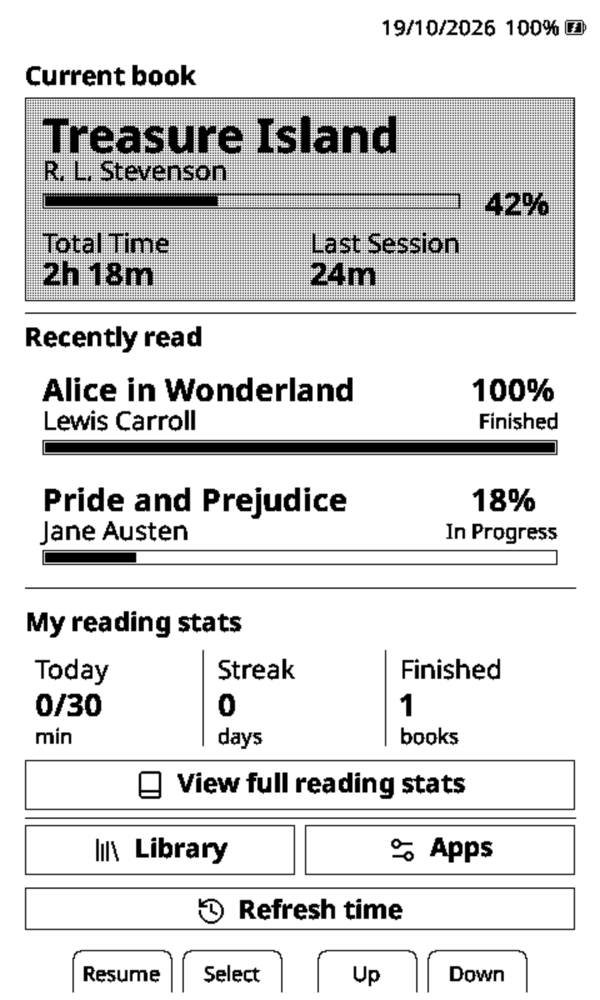
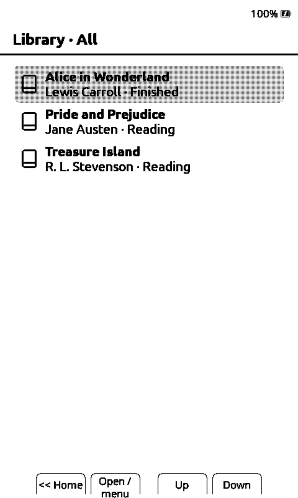
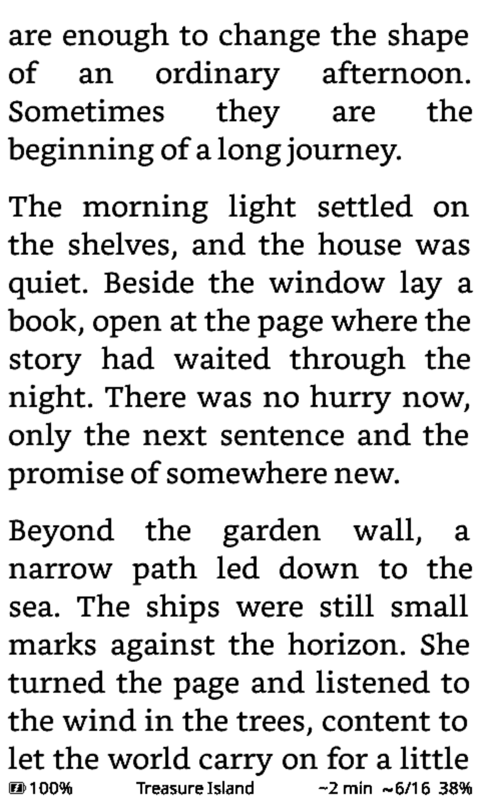

A fork of CPR-vCodex
Bruma
Reader
Your books, brought together.
Reading firmware for the Xteink X4. A unified library, a new home screen, and time-left estimates — built on the tools you already know.
Xteink X4 Preview build

Built on CPR-vCodex and CrossPoint Reader. Open source, with thanks to the original developers.
See what changes.
Real screens from the Bruma simulator. Select a screen for a closer look.

Bruma Home
Your current book, recent reads and daily stats, together in an optional home theme.


Unified library
Books from your SD folders in one list, with sorting, filters and reading states.


Time left
An estimate for your book or chapter, right in the reading status bar.
English interface, sample library. Captured in the X4 simulator; physical e-ink appearance may differ.
New in Bruma
A few thoughtful additions.
- Unified SD library
- Browse EPUB, XTC, TXT and Markdown books from different folders in one list.
- Sorting & reading states
- Sort by title, author or activity. Filter by progress and mark books as finished.
- Book & chapter time estimates
- See time left based on your reading pace, or hide it when you prefer.
- Optional Bruma Home
- A new home screen for your current book, recent reads and existing reading stats.
- Offline .cpfont installation
- Install compatible font files directly from the SD card, without Wi-Fi.
From CPR-vCodex
A familiar foundation.
- Reading statistics, goals & streaks
- The inherited statistics engine, with heatmaps, sessions and achievements.
- Dictionaries & EPUB highlights
- Look up words with SD-based StarDict dictionaries and keep highlights and page marks.
- Themes, fonts & sleep screens
- Keep the existing themes, SD fonts, reading settings and custom sleep screens.
- File transfer & web settings
- Manage your files and configure reading settings from your browser.
- OPDS & KOReader synchronization
- Browse OPDS catalogs and synchronize reading progress with KOReader.
Try Bruma on your X4.
Preview build. Physical device validation is pending.
Download the Bruma preview from this repository. Inherited OTA and Auto Flash links still target CPR-vCodex and do not include Bruma’s additions.
Xteink X4 ESP32-C3